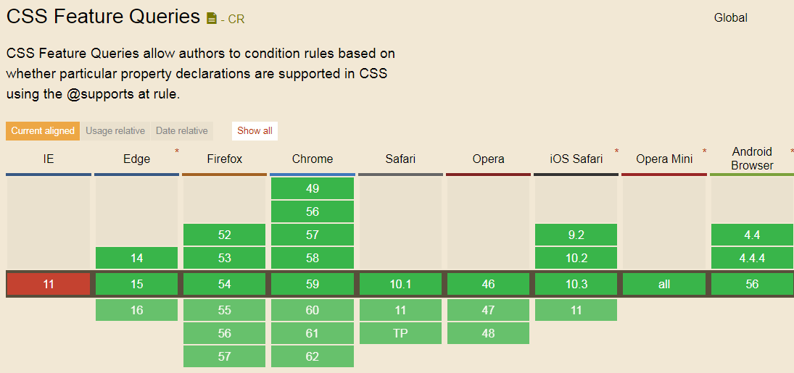
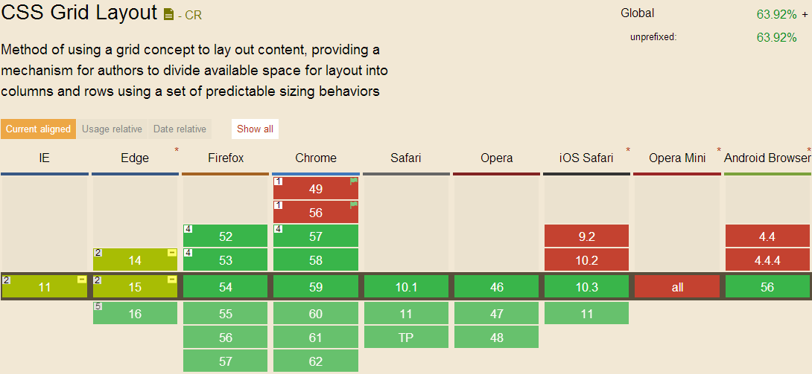
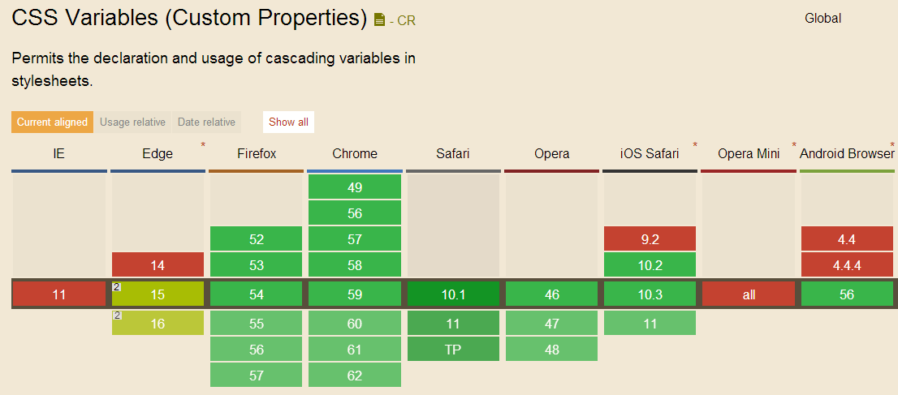

CSS 特性查询
特性查询你只需要使用
@support , 它允许我们嵌入
css的表示式进行条件判断，如果支持的浏览器则会执行 包含的语句。
@supports ( display: flex ) {
.foo { display: flex; }
}
除此之外，使用
and以及
not 我们可以实现更加复杂的查询语句。举个例子，我们可以判断这个浏览器是不是只支持老板
flex语法。
@supports ( display: flexbox )
and
( not ( display: flex ) ) {
.foo { display: flexbox; }
}

Grid Layout 网格布局
CSS的网格布局第一了一套创建单元格布局的系统。和
Flex布局有些相似，但是它确实更多针对页面布局而诞生，它拥有非常的语法属性。网格布局是由
(display:grid)的容器下，使用 网格布局，我们可以明确设置这些单元格元素的放置位置和顺序
profill
.hg {
display: grid;
grid-template-areas: "header header header"
"navigation main ads"
"footer footer footer";
grid-template-columns: 150px 1fr 150px;
grid-template-rows: 100px
1fr
30px;
min-height: 100vh;
}

CSS 变量参考
关于
CSS 自定义变量 新的草案介绍可以通过自定义变量进行
CSS的赋值。比如我们如果当算设置主题色，我们需要在样式表的很多地方用到这样的颜色。我们可以将这些颜色设置为变量，然后在其他地方引用，而不是直接进行赋值。
:root {
--theme-colour: cornflowerblue;
}
h1 { color: var(--theme-colour); }
a { color: var(--theme-colour); }
strong { color: var(--theme-colour); }
//通过js统一修改
const rootEl = document.documentElement;
rootEl.style.setProperty('--theme-colour', 'plum');

参考contain
这个 contain 属性的主要目的是隔离指定内容的样式、布局和渲染。开发人员可以使用这个 contain 属性来限制指定的DOM元素和它的子元素同页面上其它内容的联系；我们可以把它看做一个iframe。跟iframe很相似，它能建立起一个边界，产生一个新的根布局；保证了它和它的子元素的DOM变化不会触发父元素重新布局、渲染等。
这个 contain 属性可以有7种不同的值
- none 无
- layout 开启布局限制
- style 开启样式限制
- paint 开启渲染限制
- size 开启size限制
- content 开启除了size外的所有限制
- strict开启 layout, style 和 paint 三种限制组合
contain 使用场景举例
页面小饰件(widgets)
通常在页面上添加第三方小饰件时，我们几乎对它们没有什么太多的控制，比如分享工具，它们可能会因为具有相当耗资源的布局、样式、渲染操作等大幅度的降低整个页面的执行效率。为了将它们同我们的网站隔离开来，使用 contain: strict; 将第三方的小饰件同页面上的其它内容隔离开来。
屏幕外的内容
如果你有一个导航栏或其它类似的东西并不在屏幕可现实范围内出现，浏览器同样会为这些不可见的元素进行渲染。通过使用 contain: paint; 浏览器就会忽略渲染这些屏幕外不可见的元素，从而能更快的渲染其它内容。
计算容器尺寸
我在文字开头提到过这个问题，使用 contain: strict; 可以 免去很多关于容器尺寸控制的问题。比如，子元素的内容会影响容器的大小，使用 contain 属性就可以避免这样的问题产生。